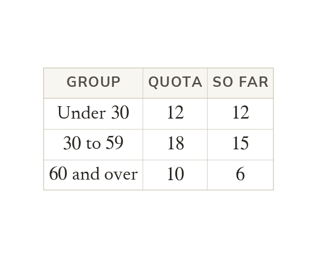
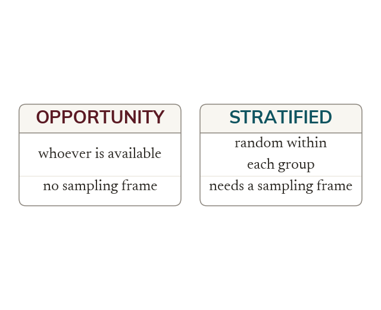
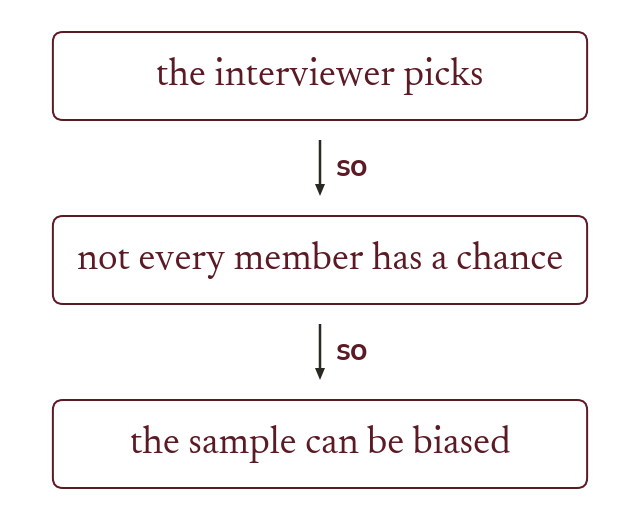
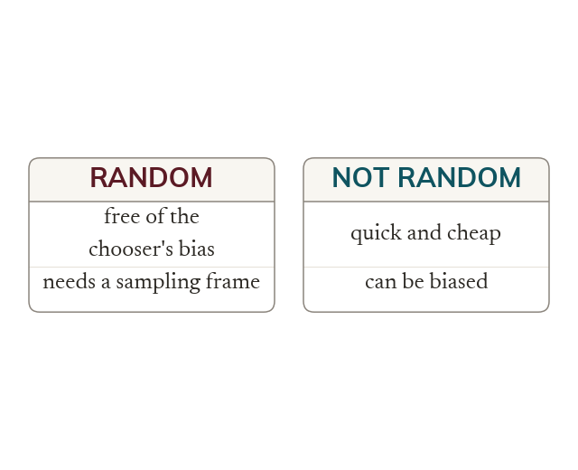
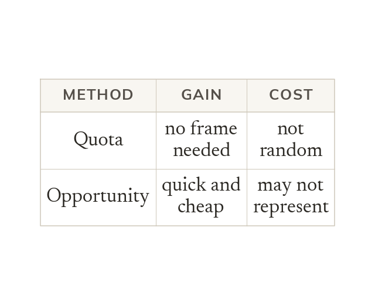
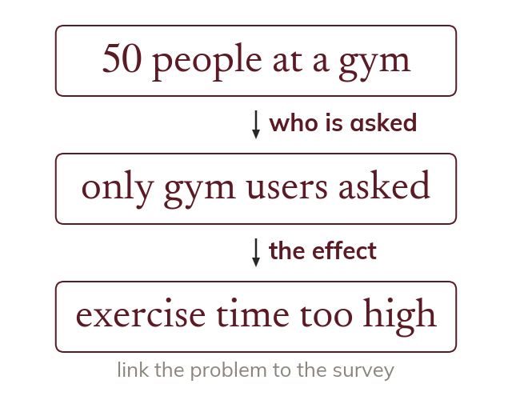

Quota sampling
The population is split into groups, as for a stratified sample. An interviewer fills a quota for each group with anyone who fits.
A random sample needs a list of the whole population, and often there is no such list. Quota and opportunity samples need none, so this lesson weighs what is gained and lost, and the next lesson turns to the data a sample collects.
Work down the page at your own pace. Write every answer in your book first, then click to check it.
Read each card, then follow the worked examples one step at a time.

The population is split into groups, as for a stratified sample. An interviewer fills a quota for each group with anyone who fits.

The sample is whoever is there at the time and fits the criteria. It is quick and easy, but it may not represent the population.

In both methods the interviewer picks the people, so not every member has an equal chance. That is why the sample can be biased.
Pick an answer. If it's wrong, the feedback tells you which mistake it was.
Write the blanks in your book first, then tap each one to check.
Read each card, then follow the worked examples one step at a time.

Simple random, systematic and stratified samples are free of the chooser's bias. Each one needs a sampling frame.

Quota and opportunity samples are quick and cheap, and need no frame. But the chooser can bias the sample.

Name the method's problem in this context, and its effect on the result. Then suggest a better method.
Pick an answer. If it's wrong, the feedback tells you which mistake it was.
Write the blanks in your book first, then tap each one to check.
Finished? Next lesson: 12.S1.4 Types of Data.
For each skill, tap the one that is true for you today. Your Revise pages start with anything you mark Not yet.
Your ratings are saved on this device only.
Log in, then search for a code to practise that skill.